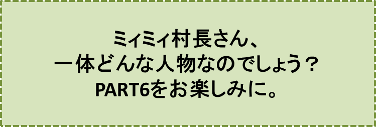

カラスの大王物語-PART5-
『不思議の島』の巻
笠原正雄
この島、不思議な島です。目に入る草は、どんな草もジローの背丈ぐらいありますし、エノキやムクノキ、ケヤキなどは、もう天を衝くような高さでした。
草木だけではありません。いくつもの群れを作って元気に飛びまわっているスズメはハトぐらいの大きさですし、そのハトはニワトリぐらい、ニワトリはオオワシほどの大きさです……。
チョウチョやトンボ、それにセミ達も、2倍も、3倍も大きく、目に入るもの全て迫力一杯、目の前に飛んできます。
本当に驚きいっぱいの島です。
……ジローもゴンもタマも、朝から何も食べていませんでしたのでとても空腹でした。
嬉しいことに近くに野生のバナナの木がありました。バナナの木は
“食べてくださぁーい”
というように、数えきれないほどの房を実らせていました。どの房にもバナナが盛り上がるように実っています。
「あれを一本いただいたらお腹いっぱいになるよね」
というジローの声にタマが素早く反応して、バナナの木をかけ登りました。
ヒョウのように軽い身ごなしで、あっという間に飛び切り大きい房に辿り着くと、一本をもぎとり、地上に落としました。
ジローが見事、キャッチです。
バナナは大きく、皆で分けて食べても食べきれないほどです。お腹いっぱいになりました。
食事がすむと、ジロー達はあてもなく歩き始めました。右も左も全く同じ景色、区別のつけようがありませんから、足の向くままに歩くしか仕方ありません。
二、三十分も歩いたでしょう。目の前に突然レールが現れました。レールの幅は広く、大人の背丈（せたけ）は十分あるでしょう。
“この島は何もかも大きいのだなぁ。不思議な島だなぁ”
ジローは、不安も感じましたけれど、ひょっとしたら冒険の国に来たのかもしれない……という期待感とともに、ワクワク感が胸の中に広がっていくのを感じました。
三人はレールのそばに座って、列車がやってくるのを待つことにしました。
見渡す限り、夏の花、満開です。ジローの大好きなカンナやヒマワリ、それに沢山の花をこぼれんばかりにつけたサルスベリの木が、見渡す限り生えています。
どの花も今まで目にしてきた花達よりも二倍も三倍も大きく、真夏のお日さまをたっぷり浴びて、元気いっぱいに咲き誇っています。
このとき、はるか向こうから黒い物体が、ぽつんと目の中に飛び込んで来ました。
“もしかして”
と期待に大きく胸を膨らませて眺めているうちに、黒い物体はスピードをあげ、こちらに向ってぐんぐん近づいてきます。間違いなく乗り物です。
もうすっかり形が見えました。大きなトロッコ電車です。幸いジロー達に気が付いたのでしょう。急ブレーキの音を原っぱいっぱいに響かせながら、目の前に急停車してくれました。
運転手はカエルのケロケロです。
トロッコにはカボチャぐらいの大きなトマトをはじめ、ナスビやキュウリ、それにバナナ、メロンなどの果物が荷台に山盛りに積まれています。
ケロケロは、この島でとれた作物を、毎日、集荷して市場に届ける仕事をしているのです。
ケロケロは緑色の背中に描かれたご自慢の三本の茶色の縞模様を、たっぷり見せた後、お腹を突出し、口を精一杯大きく開けて
「君達、ずい分小さいねえ。どこから来たのかな？ 東の国？ 西の国？ それとも南の国？」
と言って一息ついだ後
「この島ではね、動物も植物も特別に大きくなることが出来るんだ。よその国からやってくる人達は「不思議の島」って、呼んでいるんだ。もしこの「不思議の島」がお気に召したら、君達も大きくなって、いつまでも滞在できるのじゃないかなぁ……」
ケロケロはしばらく考え込んでいるようでしたが、急に“ポン”と手を打って
「そうだ。ウサギのミィミィ村長さんの所に案内してあげよう。さぁ、そこの空いた場所に腰をおろし給(たま)え。君達は小さいから、そこでも十分のスペースさ。さぁ出ぱぁーつ！」
ジローはミィミィ村長さんとやらに会ってみることにしました。何か道が開けるかもしれません。マイ広場に帰れるかもしれない……。あわい希望が胸に宿ります。
この島は、想像していたよりもずっと大きい島でした。ところどころに木立が見える平野が、どこまでも、どこまでも広がっています。トロッコ電車は、どんどんスピードを上げましたので、まわりの景色は飛ぶように流れていきました。
……しかし、大きなトマトやキュウリ、それにキャベツなどが沢山に実っている様子は、しっかり観察することができます。
大人の倍ぐらいの高さの稲が、こぼれるほどの黄金(こがね)の実りをつけています。
稲穂は風にゆっくりと揺れて
“ようこそ、いらっしゃあーい”
と言っているようでした。
小高い丘や小さな川、畑や田んぼ、野原を越えて、30分近く走ったでしょう。トロッコ電車は、ミィミィ村長が執務に忙しい村役場に着きました。
♪♪♪♪コーヒーブレイク♪♪♪♪
